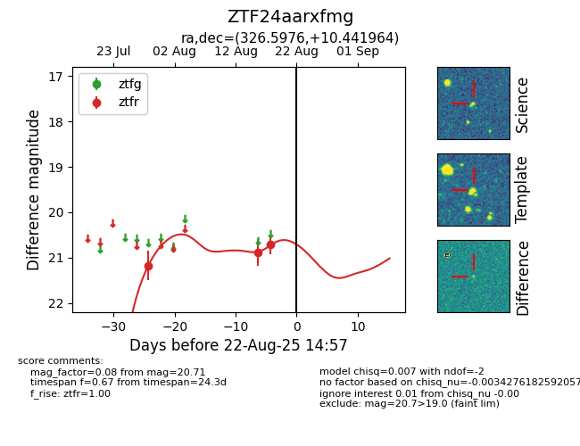

Target ZTF24aarxfmg at 2025-08-22 14:57, see:
FINK: fink-portal.org/ZTF24aarxfmg
Lasair: lasair-ztf.lsst.ac.uk/objects/ZTF24aarxfmg
ALeRCE: alerce.online/object/ZTF24aarxfmg
alt names
ZTF24aarxfmg (ztf,alerce)
coordinates:
equatorial (ra, dec) = (326.5976,+10.44196)
galactic (l, b) = (66.4898,-31.49828)
photometry
last ztfr=20.71
3 ztfr detections
